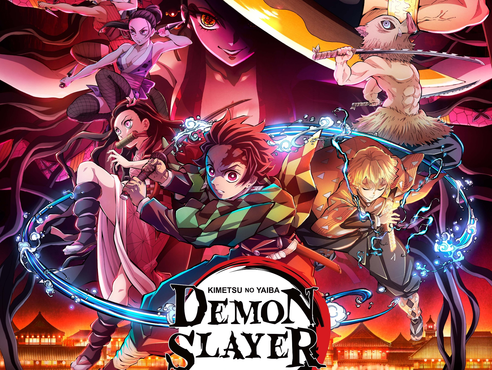

Demon slayer

Synopsis
Demon slayer est une série de manga écrite et dessinée par Koyoharu Gotōge.
L'histoire suit le périple de Kamado Tanjirō qui cherche un moyen de rendre à nouveau
humaine sa petite sœur Nezuko après sa transformation en démon.
Manga
Adaptation Animé
- 1ère saison sur 26 épisodes par les studio Ufotable
- film d'animation "Le train de l'infini"
- 2ème saison Arc du quartier des plaisirs sur 15 épisodes
Montage Vidéo
"Tanjiro's name "
Il semblerait que le protagoniste ait hérité de la volonté et d'un pouvoir ancestral
...
Jujutsu Kaisen
Synopsis
Jujutsu Kaisen est une série de manga écrite par Gege Akutami, l'univers se déroule
dans un monde où des fléaux sont créés à partir des émotions négatives des Humains.
Ainsi, pour protéger les lieux avec une forte
concentration de ces émotions comme les écoles ou les hôpitaux, ces infrastructures
possèdent une relique, réceptacle d'un fléau, car l'on ne peut lutter contre les fléaux
qu'avec un fléau plus puissant. Ceux-ci sont invisibles aux yeux des humains sauf pour
une poignée de personnes, par exemple les exorcistes. Le métier d'exorciste consiste à
éliminer les fléaux et ainsi protéger le peuple de ces derniers, mais cela n'est pas
sans risques, car ces fléaux peuvent être plus ou moins puissants.
Manga
Adaptation Animé
Montage Vidéo
"Juju Darkness "
Une particularité de cette oeuvre est le coté sombre qu'elle propose. J'ai essayé à
travers cette vidéo de la transcrire...
Shingeki No Kyojin
Synopsis
Manga écrit par Hajime Isayama, l’histoire tourne autour du personnage d’Eren Jäger
dans un monde où l’humanité vit
entourée d’immenses murs pour se protéger de créatures gigantesques, les Titans. Le
récit raconte le combat mené par l’humanité pour reconquérir son territoire, en
éclaircissant les mystères liés à l’apparition des Titans, du monde extérieur et des
évènements précédant la construction des murs.
Manga
Adaptation Animé
- 1ère saison sur 25 épisodes par Wit Studio
- 2ème saison 22 épisodes par Wit Studio
- 3ème saison 22 épisodes par Wit Studio
- 4 ème saison 32 épisodes par Studio Mappa
Montage Vidéo
"Tatakae"
Eren à insufflé son crédo tatakae à ses proches, j'ai voulu le montrer par ce montage
car le regard en dit long